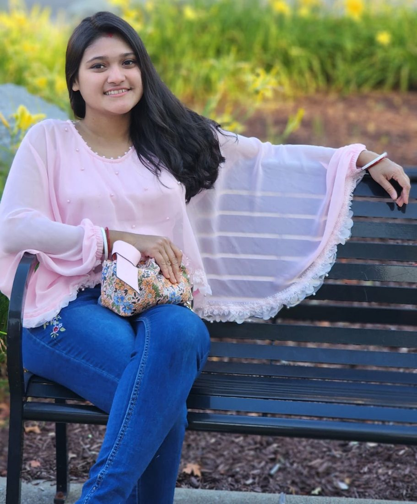
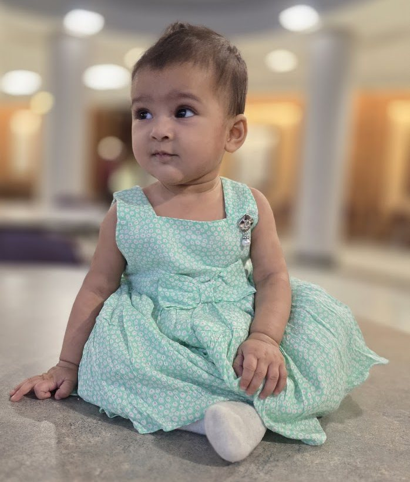
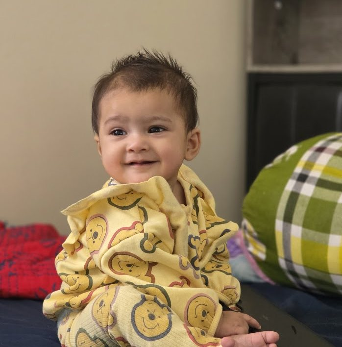
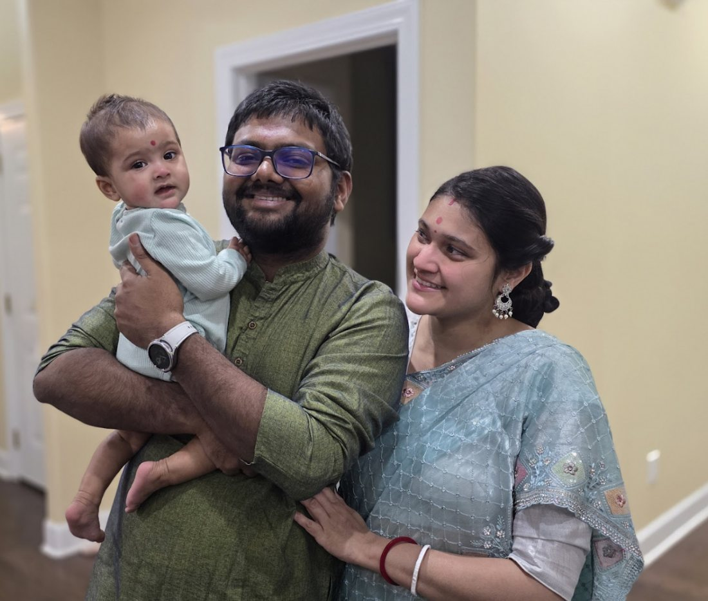
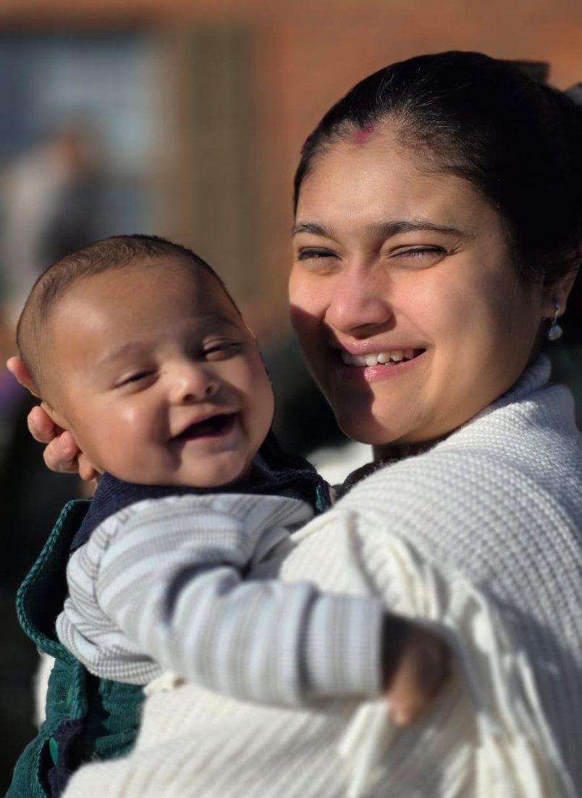
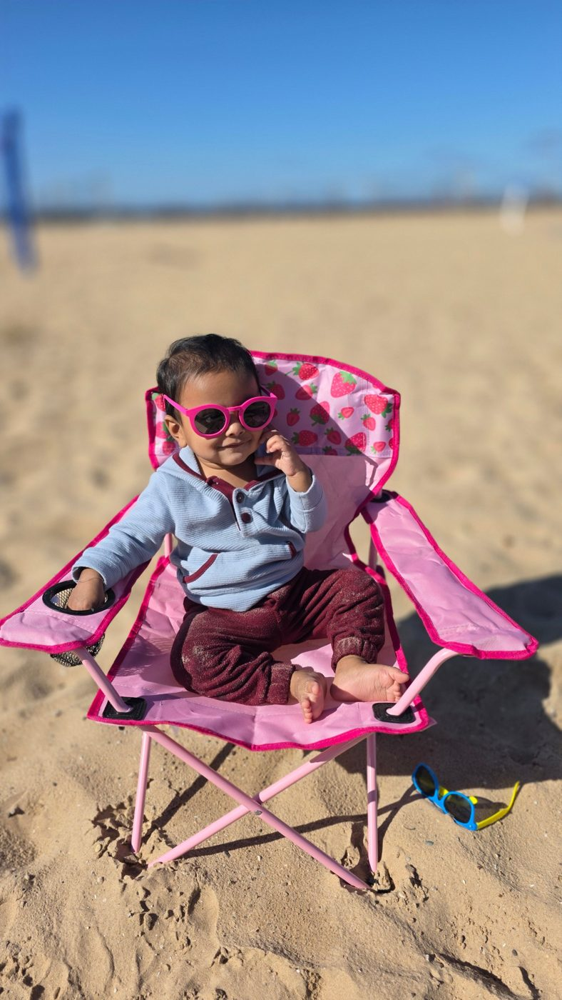
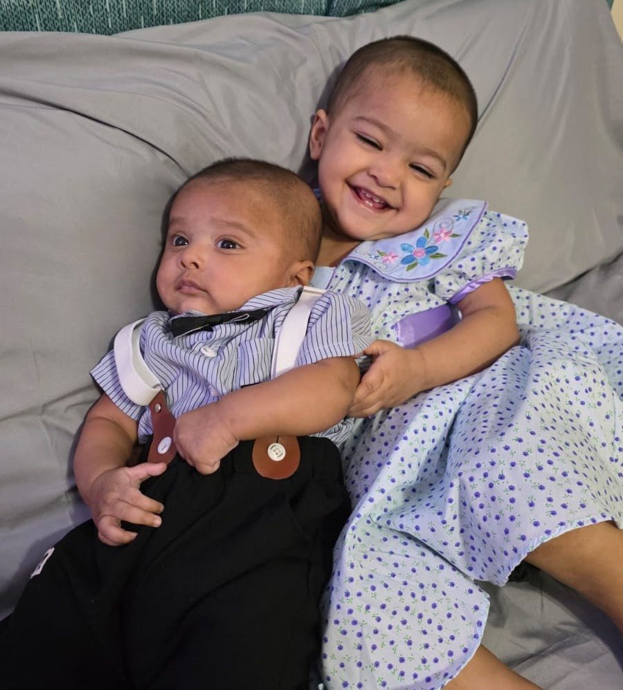
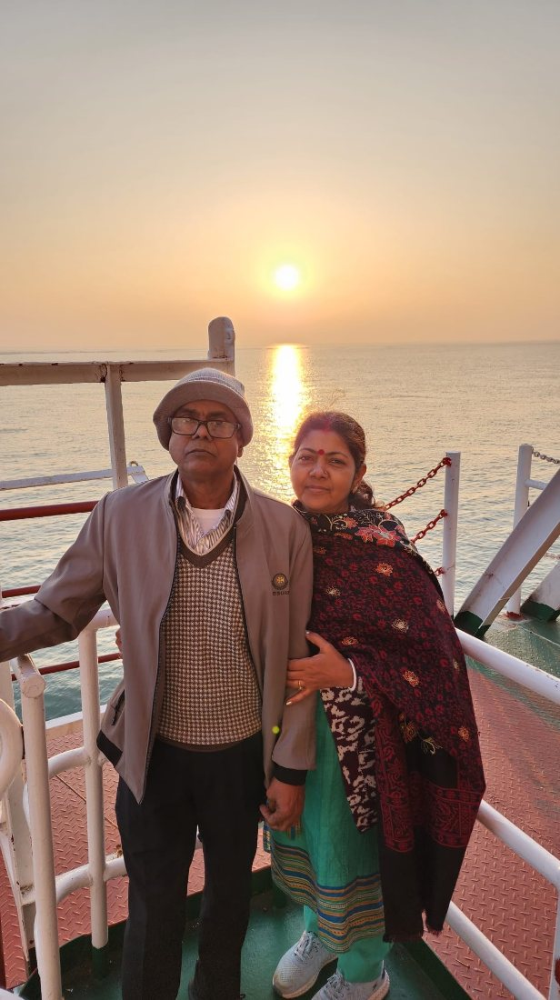
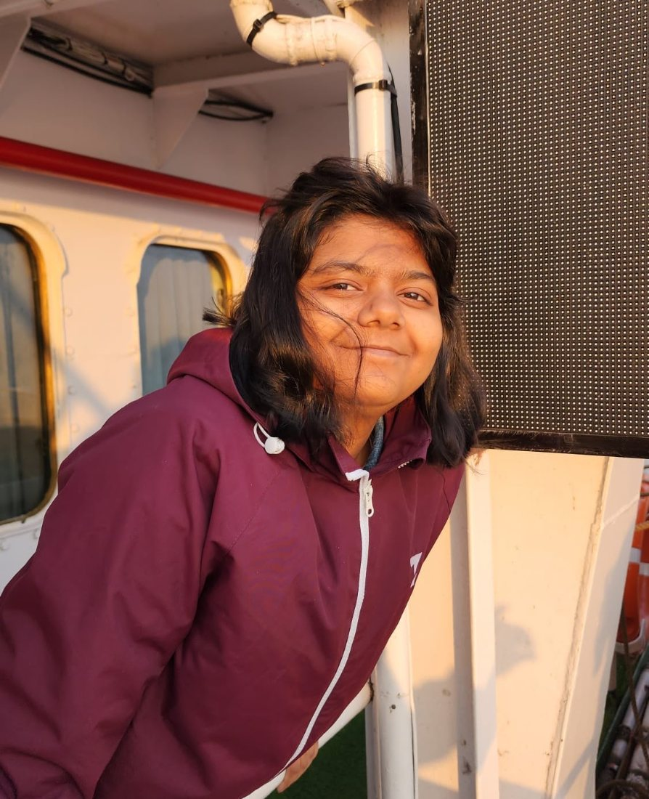

My journey in the USA began in late July 2021 with my best friend and partner, Bidya Debnath, by my side. We started our life together in Starkville, Mississippi. In July 2024, God blessed us with the greatest gift of all, our beautiful daughter, Ujjoyini Biswas, whose smile feels like sunlight on the darkest days.
I am a relentless worker—I don’t rest until the job is done. In the rare moments I step away, you’ll find me watching Formula One or soccer, passions I’ve carried for over two decades. Fernando Alonso and Cristiano Ronaldo have been my unwavering inspirations, and I haven’t missed a single race or match of theirs in 20 years.
I dream big—not just of success, but of significance. I strive to become a pioneer in my field, opening new doors in signal processing through the power of explainable AI. And one day, I will sit in a Porsche 911 Turbo S with my father beside me, knowing that every late night, every sacrifice, and every dream was worth it—that will be my version of success.

My Wife: Bidya Debnath
I met this extraordinary woman back in 2015, during our undergraduate days in the Electrical and Electronic Engineering department of Bangladesh University of Engineering and Technology. She was—and still is—the most complete person I have ever laid eyes on. Beautiful in every sense of the word, the kind of beauty that makes it impossible to look away. But it wasn’t just her looks—she could sing like a dream, dance with grace, create mesmerizing sand art, and, on top of it all, she was a brilliant researcher.
And then there was me, just a guy who knew how to hang out with friends and take life as it came. But sometimes, when God has a plan, miracles happen. Classmates became friends, friends turned into lovebirds, and those lovebirds became life partners.
Now, here we are in the USA, both pursuing PhDs in the same field once again. Thankfully, not under the same professor—because let’s be honest, that would’ve been a beautiful mess! 😅

My Daughter: Ujjoyini Biswas
She arrived on a warm July morning like a whisper from the heavens, soft as starlight, radiant as dawn. We named her Ujjoyini, for she is joy in its purest form— a melody our hearts had longed to hear, a dream we never dared to fully dream. Her tiny hands hold galaxies, her eyes, the promise of tomorrows yet to bloom. In her presence, time stands still— and the world, no matter how heavy, feels light. She is our beginning, our forever, our miracle written in love.



My Son: Utshob Biswas
He arrived with the hush of September skies, when summer learns to bow to autumn, carrying calm, strength, and quiet promise. We named him Utshob, for he is celebration itself— a living festival of hope, a rhythm that fills our home with light. In his small breath lives courage, in his gentle gaze, a future unfolding with purpose. He holds the steadiness of the earth, the warmth of a thousand gathered hearts. With him, joy feels deeper, fuller, complete— as if the world paused to smile in gratitude. He is our strength, our song, our legacy wrapped in love, our forever—arrived at last.


More photos of U & U

My Baba and Ma
It’s been almost three years since I last saw Baba and Ma in person. Time has a way of slipping through our fingers, quietly, relentlessly. As I sit here, thousands of miles away, I realize something bittersweet: the house I grew up in, once filled with the smells of Ma’s cooking and the comforting sound of Baba’s voice, is no longer “home” in the way it once was. It's now a place I will visit once in a while, a sacred place of memory, of love, but no longer the center of my everyday life.
Because this, this place I am in right now with my little family, this life I’m building, is my new home.
And that’s a hard truth to accept. Somewhere along the way, without noticing, I stepped into adulthood. I’m almost 30 now, and the boy who never wanted to leave his parents’ side has quietly grown into a man who must carry the torch forward.
But everything I am, and everything I strive to become, is rooted in them.
My Baba, the silent strength in my life, a man of unwavering principles who taught me what it means to stand tall with humility and grace. He never needed to say much, his actions always spoke louder than words.
And my Ma, the heart of our home, her love is boundless, her wisdom deep. She is the reason I know how to care, how to feel, how to persevere through every storm. With her, love was never a spoken thing, it was in the way she looked at us, the way she prayed quietly, the way she never let us fall.
I may be far, and I may not call that house “home” anymore,
but they, they will always be my beginning,
and wherever I go, I carry them with me.

My Sister: Sharmmistha Biswas
My sister, Sharmmistha Biswas, is a light in my life I never knew I needed. She is more than a decade younger than me, yet her presence feels timeless. Hard to believe she is almost 20 now, the little girl I once held in my arms is slowly becoming a woman, though in my heart, she will always be my baby sister.
She is not the typical quiet sibling who keeps her distance. She calls me almost every day, checks on me even when I am buried in work, and pampers me for no reason at all, just out of pure love. There is comfort in her voice, in her laughter, in her strange love for horror films. She is fearless, expressive, and incredibly thoughtful.
No matter how far I go or how busy life gets, she reminds me what it means to feel at home, just by being herself.